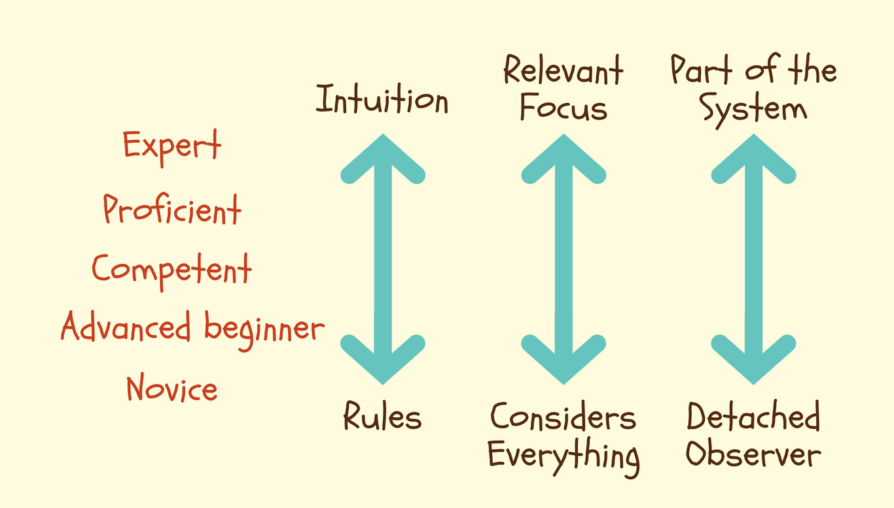

### Safe Teams “Trust is the foundation of real teamwork.” ― Patrick Lencioni, The Five Dysfunctions of a Team: A Leadership Fable // Name: Jukka Nikki, Identity: Programmer, Since: 6502 // TODO: Get Better with People & Other messy stuff
"A major purpose of education is to cultivate open-mindedness and intelligence. Defined in terms of the aptitude for acquiring knowledge, intelligence depends upon an alert curiosity. The cultivation of intelligence depends on freedom to exercise curiosity." - Jiddu Krishnamurti
# Becoming developer or: any skill only needs 10 years to master
"I'm not a great programmer; I'm just a good programmer with great habits." - Kent Beck "We are what we repeatedly do. Excellence, then, is not an act, but a habit." - Aristotle "The second half of a man’s life is made up of nothing but the habits he has acquired during the first half." – Fyodor Dostoevsky
<img alt="learning pit" src="images/learning_pit.png" width="50%"> "Learning occurs when you step out of your comfort zone. And yet, many people are hesitant to take this step for fear of making mistakes or revealing their weaknesses."
<img alt="learning and practice zones" src="images/learning_practice_zones.png" width="50%"> "The problem why many people don’t improve, as soon as they have reached a certain level, is that they spend all of their time in their performance zone."
"Individuals who believe their talents can be developed (through hard work, good strategies, and input from others) have a growth mindset. They tend to achieve more than those with a more fixed mindset (those who believe their talents are innate gifts)."
## Psychological safety <img alt="4 Stages of Psychological Safety" src="images/Stages_of_Psychological_Safety.png" width="40%"> "a condition in which human beings feel (1) included, (2) safe to learn, (3) safe to contribute, and (4) safe to challenge the status quo"
## Dunning-Kruger Effect <img alt="incompetent, and not knowing it" src="images/dunning_kruger_effect.png" width="50%"> "After initially gaining new skills very quickly, people tend to view themselves as highly skilled but later they realize they have many faults."
## Levels of competence <img alt="competence hierarchy" src="images/competence_hierarchy.png" width="50%" > "and we add: ExtremelyConsciousIncompetence = being very good at something you start something new, and then fall back to ConsciousIncompetence." - wiki.c2.com
### Johari Window "Build trust with others by revealing information about yourself. Learn more about yourself by receiving feedback from others, and learning how they perceive you."
#### Automatic vs. Conscious: Dual process theory <img alt="intuition vs. deep thinking" src="images/system1_system2.jpg" width="70%"> - System 1 operates automatically and quickly, with little or no effort and no sense of voluntary control. - System 2 allocates attention to the effortful mental activities that demand it, including complex computations.
#### "Expert intuition" has limits "The planning fallacy is a term used by psychologists to describe our tendency to underestimate the amount of time it will take to complete a task. Key reasons: 1. Failing to consider how long it's taken us to complete similar tasks in the past 2. Assuming that we won't run into any complications that will cause delays"
#### Dreyfus model from novice to expert "metacognitive abilities, or the ability of being self-aware, tends to be possible only at the higher skill levels." "Proficient practitioners can take full advantage of the reflection and feedback that is core to agile methods."
#### Dreyfus model and majority of us  "most people, for most skills, for most of their lives, never get any higher than the second stage, advanced beginner, “performing the tasks they need and learning new tasks as the need arises but never acquiring a more broad-based, conceptual understanding of the task environment.""
#### Shu Ha Ri "In the Shu phase, the student copies the techniques as taught (..). In the Ha stage, the student must reflect on the meaning and purpose and come to a deeper understanding. Ri means to go beyond or transcend; no longer a student, the practitioner now offers original thought."
#### in the zone "Your mind is clear and you feel like you’re in a natural rhythm where your knowledge, motivation, and concentration magically align."
#### Meaningful challenge <img alt="Flow zones" src="images/flow_zones.png" width="35%"> "It is how we choose what we do, and how we approach it, that will determine whether the sum of our days adds up to a formless blur, or to something resembling a work of art.” ― Mihaly Csikszentmihalyi
#### Yerkes–Dodson law (1908) <img alt="Yerkes–Dodson law" src="images/yerkes_dodson_law.png" width="40%"> "difficult or intellectually demanding tasks may require a lower level of arousal (to facilitate concentration), whereas tasks demanding stamina or persistence may be performed better with higher levels of arousal (to increase motivation)."
#### Learning under stress is not possible "Survival mode is that awful place where you are over committed and have no time to learn, so you are left only "reacting"; fixing fires, cutting corners, and never really proud of your work." - Roy Osherove
## One Skull Rule "The most valuable asset in the software industry is the synthesis of programming skill and deep context in the business problem domain, in one skull." or: 10x superpower which is hardly given value "Domain Knowledge: One of the most under-appreciated skills that programmers have; and a key reason why programmers aren't commodities." - wiki.c2.com
#### Shu Ha Ri cycle "It will be inevitable that you revisit the foundation so that you can adjust it to your current situation and continue the process of mastery." "Research your own experience. Absorb what is useful, reject what is useless, add what is uniquely your own." - Bruce Lee
#### Gut feeling for design? "Highly experienced and knowledgeable developers have a "feel" for good design. Having reached a state of "UnconsciousCompetence," where they routinely practice good design without thinking about it too much, they find that they can look at a design or the code and immediately get a "feel" for its quality, without getting bogged down in extensive "logically detailed arguments"". - c2
## Jukkas Short Advice - Programming is just one skill you need - Become so fluent on programming that you have capacity to learn "The hard stuff" - Being efficient all the time is not only impossible, but it's also damaging you - Understanding users needs is not "somebody elses" job, but everyones, including you - Domain knowledge does not only elevate your value, but it makes programming meaningless
#### Summary, your future to come "All programmers are optimists. Perhaps this modern sorcery especially attracts those who believe in happy endings and fairy godmothers. Perhaps the hundreds of nitty frustrations drive away all but those who habitually focus on the end goal. Perhaps it is merely that computers are young, programmers are younger, and the young are always optimists. But however the selection process works, the result is indisputable: “This time it will surely run” or “I just found the last bug.”" — Fred Brooks